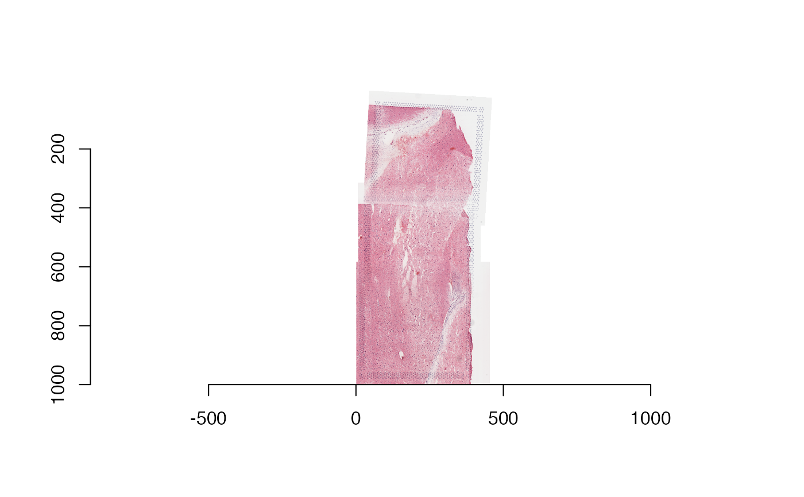

R/prep_fiji_image.R
prep_fiji_image.RdAfter stitching all groups in sample_info with Fiji, images of
various resolutions (pixel dimensions) are left. This function creates copies
of each image whose largest dimension is lowres_max_size pixels. It
also creates a corresponding scalefactors_json.json file much like
SpaceRanger's. In conjunction with prep_fiji_coords(), this function
prepares for building the SpatialExperiment-class
with build_spe().
prep_fiji_image(sample_info, out_dir, lowres_max_size = 1200)A data.frame() with columns capture_area,
group, fiji_xml_path, fiji_image_path,
spaceranger_dir, intra_group_scalar, and
group_hires_scalef. The last two are made by rescale_fiji_inputs().
A character(1) vector giving a path to a directory to place
the output image(s) and scale factors. Provided the parent directory exists,
out_dir will be created if necessary.
An integer(1) vector: the resolution (number of
pixels) of the larger dimension of the output image(s), considered to be "low
resolution". The default value of 1200 assumes that you are stitching
together at most a 2 by 2 grid of Visium capture areas, where each has at
most 600 pixels on the longest dimension (as is the default in SpaceRanger).
This function returns character() with the file paths to the
tissue_lowres_image.png and scalefactors_json.json files it created.
# Define sample information for the example human brain data
sample_info <- dplyr::tibble(
group = "Br2719",
capture_area = c("V13B23-283_A1", "V13B23-283_C1", "V13B23-283_D1")
)
# Add 'spaceranger_dir' column
sr_dir <- tempdir()
temp <- unzip(
spatialLIBD::fetch_data("visiumStitched_brain_spaceranger"),
exdir = sr_dir
)
#> 2024-07-26 21:37:04.630744 loading file /github/home/.cache/R/BiocFileCache/29568ba5edc_visiumStitched_brain_spaceranger.zip%3Frlkey%3Dbdgjc6mgy1ierdad6h6v5g29c%26dl%3D1
sample_info$spaceranger_dir <- file.path(
sr_dir, sample_info$capture_area, "outs", "spatial"
)
# Add Fiji-output-related columns
fiji_dir <- tempdir()
temp <- unzip(
spatialLIBD::fetch_data("visiumStitched_brain_Fiji_out"),
exdir = fiji_dir
)
#> 2024-07-26 21:37:07.133583 loading file /github/home/.cache/R/BiocFileCache/2957d42eaad_visiumStitched_brain_fiji_out.zip%3Frlkey%3Dptwal8f5zxakzejwd0oqw0lhj%26dl%3D1
sample_info$fiji_xml_path <- temp[grep("xml$", temp)]
sample_info$fiji_image_path <- temp[grep("png$", temp)]
## Re-size images and add more information to the sample_info
sample_info <- rescale_fiji_inputs(sample_info, out_dir = tempdir())
spe_input_dir <- tempdir()
out_paths <- prep_fiji_image(
sample_info,
out_dir = spe_input_dir, lowres_max_size = 1000
)
# A "low resolution" stitched image was produced, which has 1000
# pixels in its largest dimension
this_image <- imager::load.image(
file.path(spe_input_dir, "Br2719", "tissue_lowres_image.png")
)
dim(this_image)
#> [1] 461 1000 1 3
library("imager")
#> Loading required package: magrittr
#>
#> Attaching package: ‘magrittr’
#> The following object is masked from ‘package:GenomicRanges’:
#>
#> subtract
#>
#> Attaching package: ‘imager’
#> The following object is masked from ‘package:magrittr’:
#>
#> add
#> The following objects are masked from ‘package:SummarizedExperiment’:
#>
#> resize, width
#> The following object is masked from ‘package:Biobase’:
#>
#> channel
#> The following objects are masked from ‘package:GenomicRanges’:
#>
#> resize, width
#> The following objects are masked from ‘package:IRanges’:
#>
#> resize, width
#> The following object is masked from ‘package:S4Vectors’:
#>
#> width
#> The following object is masked from ‘package:BiocGenerics’:
#>
#> width
#> The following objects are masked from ‘package:stats’:
#>
#> convolve, spectrum
#> The following object is masked from ‘package:graphics’:
#>
#> frame
#> The following object is masked from ‘package:base’:
#>
#> save.image
plot(this_image)

# In total, an image and scalefactors were written
out_paths
#> [1] "/tmp/RtmppEj2ir/Br2719/tissue_lowres_image.png"
#> [2] "/tmp/RtmppEj2ir/Br2719/scalefactors_json.json"